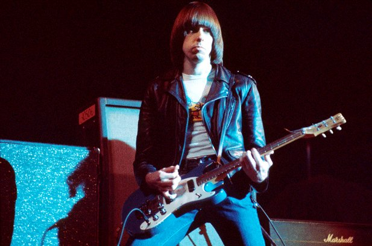
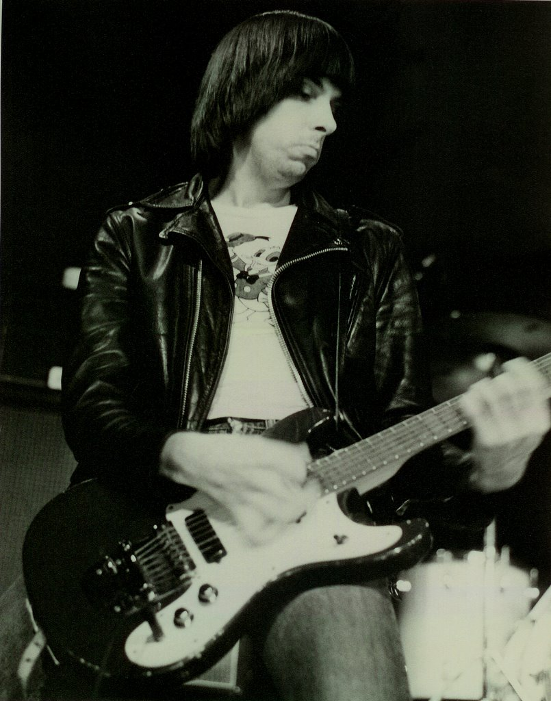

Джон Уильям Каммингс (англ. John William Cummings, 8 октября 1948, Лонг-Айленд, Нью-Йорк, США — 15 сентября 2004, Лос-Анджелес, Калифорния, США) — более известный как Джонни Рамон (англ. Johnny Ramone) — гитарист и один из основателей американской панк-рок группы Ramones. Вместе с вокалистом Джоуи Рамоном он был в группе с момента её создания и до распада. В 2003 году по версии журнала Rolling Stone Джонни Рамон занял 16 место среди лучших гитаристов всех времен.
Джон Каммингс родился в Лонг-Айленде и был единственным ребенком в семье строительного рабочего ирландского происхождения. Он вырос в Форест Хиллс, пригороде Нью-Йорка. Будучи подростком, Джонни играл в группе Tangerine Puppets вместе с будущим ударником Ramones Тамашом Эрдели (известным как Томми Рамон).Он был болельщиком Нью-Йорк Янкиз. Джонни учился в военном училище и работал водопроводчиком вместе со своим отцом до того, как группа Ramones стала успешной, и недолго учился в колледже в штате Флорида.
Джонни стал виновником одного из главных конфликтов в группе, когда начал встречаться и позже женился на экс-подруге Джоуи Рамона. Вероятно после этого Джоуи написал песни «The KKK Took My Baby Away» и «She Belongs To Me», хотя есть предположение, что вторая песня была написана ещё до основания Ramones. Хотя группа просуществовала ещё в течение многих лет после этого инцидента, отношения между двумя участниками оставались прохладными и они почти не общались вне сцены. Годы спустя, когда Джоуи был в больнице, где умирал от рака, Джонни отказался позвонить ему. Позже он обсудил этот инцидент в фильме End of the Century: The Story of the Ramones, сказав, что подобная попытка примирения была бы бесполезной. Он добавил, что находился в депрессии в течение недели после смерти Джоуи. В своей книге менеджер группы Монти Мельник написал о том, что Джонни говорил в то время: «Я ничего не сделаю без него. Я думаю, что это всё… Он был моим партнером. Я и он — мне этого не хватает».
Помимо музыкальной карьеры, Джонни снимался в нескольких художественных (в том числе Rock 'n' Roll High School) и документальных фильмах. Он также участвовал в некоторых телепроектах, в частности Симпсоны (серия Rosebud, 1993) и Космический призрак (серия «Bobcat»).
Внутри в целом левого американского панк-сообщества Джонни, бывший убежденным сторонником Республиканской партии, был хорошо известен как один из самых заметных консерваторов.
Джонни подтвердил свою политическую принадлежность перед широкой публикой в 2002 году, когда Ramones были введены в Зал славы рок-н-ролла. Во время благодарственной речи, будучи одетым в футболку, рванные синие джинсы и кожаную куртку, он сказал: «Боже, благослови президента Буша, и, Боже, благослови Америку».
Он сказал в интервью, когда его спросили о его консервативных взглядах, «Я думаю, Рональд Рейган был лучшим президентом в моей жизни».
Эти убеждения подтвердились ещё в 1985 году, когда группа выпустила в Великобритании сингл «Bonzo Goes To Bitburg». (В мае 1985 года Рейган посетил могилы погибших солдатов Ваффен-СС в немецком Битбурге. Противники этой акции ещё до начала визита называли эту поездку «Bonzo Goes to Bitburg»). Джонни настаивал на переименовании сингла, посчитав это название оскорбительным для Рейгана, и для выпуска в США песня была переименована в «My Brain Is Hanging Upside Down». В том же интервью он утверждал, что «Панк — правый».